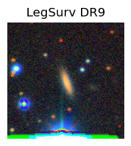
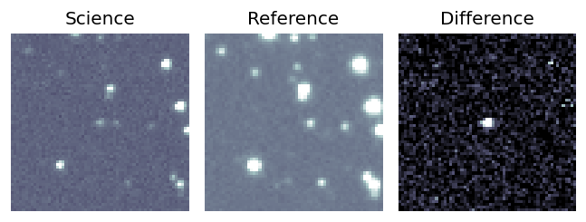
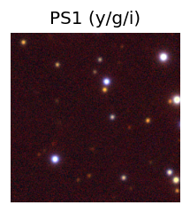
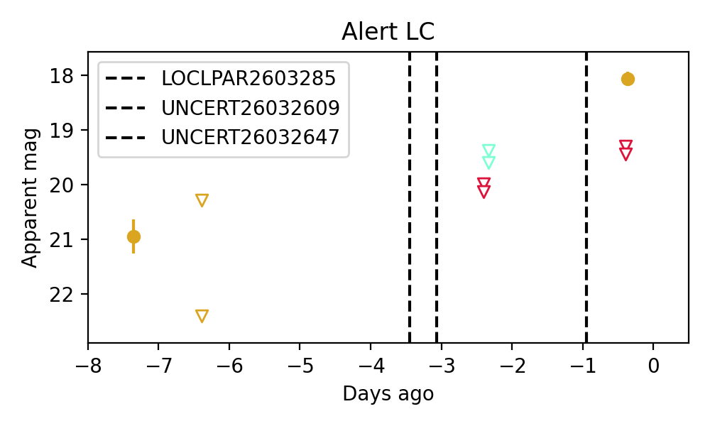

Candidate List 20260329Previous Day Next Day
Section 1: New Sources (age<1d) Section 2: Old (1-5d) sources observed last nightplaceholder
Section 1: New Afterglow/FBOT Cands Last Night (0)
Section 2: Older Sources Observed Last Night (3)
0. ZTF26aappgzc (Afterglow?) [Back to Top] [Share] [Trigger Swift] [Fritz] [Lasair]RA, Dec: 165.72679, 51.48806 11h 2m54.43s, 51d29m17.02sGalactic (l, b): 155.55104, 58.21033 ext(g-r) = 0.012


TESS: Sectors 21
SDSS (10 arcsec):Found SDSS phot-z: z=0.08; peak abs mag = -18.96
PS1: 0 sources in 3 arcsec
LegacySurvey: 1 sources in 3 arcsec Closest: d = 1.13 arcsec, 259.9 deg (east of north) photoz=0.09 (68% bounds 0.06, 0.12), type=EXP peak abs mag = -19.32 (68% bounds -18.53, -20.05)

Extinction-corrected gr color:
From alerts: -0.29 +/- 0.2 mag
Rise Rate:
g: 0.65 mag/day
r: 0.52 mag/day
i: -99 mag/day
Fade Rate:
g: 0.71 mag/day
r: -99 mag/day
i: -99 mag/day
1. ZTF26aaqbzfh (FBOT?) [Back to Top] [Share] [Trigger Swift] [Fritz] [Lasair]RA, Dec: 93.60796, 51.32454 6h14m25.91s, 51d19m28.34sGalactic (l, b): 162.71895, 15.46041 ext(g-r) = 0.19


TESS: Sectors [60 73]
PS1: 0 sources in 3 arcsec
LegacySurvey: 1 sources in 3 arcsec Closest: d = 1.34 arcsec, 8.7 deg (east of north) photoz=0.49 (68% bounds 0.38, 0.53), type=EXP peak abs mag = -23.4 (68% bounds -22.74, -23.64)

Extinction-corrected gr color:
From alerts: 0.41 +/- 0.22 mag
Consistent with synchrotron, g-r>0!
Rise Rate:
g: 0.36 mag/day
r: 0.36 mag/day
i: -99 mag/day
Fade Rate:
g: -99 mag/day
r: -99 mag/day
i: -99 mag/day
2. ZTF26aaqpinf (Afterglow?) [Back to Top] [Share] [Trigger Swift] [Fritz] [Lasair]RA, Dec: 94.37242, 8.25234 6h17m29.38s, 8d15m8.42sGalactic (l, b): 201.70188, -3.7005 ext(g-r) = 0.501


TESS: Sectors [ 6 33 87 111]
PS1: 0 sources in 3 arcsec
LegacySurvey: 0 sources in 3 arcsec

Extinction-corrected ri color:
From alerts: 1.1 +/- 99 mag
Rise Rate:
g: -99 mag/day
r: -99 mag/day
i: 0.72 mag/day
Fade Rate:
g: -99 mag/day
r: -99 mag/day
i: 1.5 mag/day